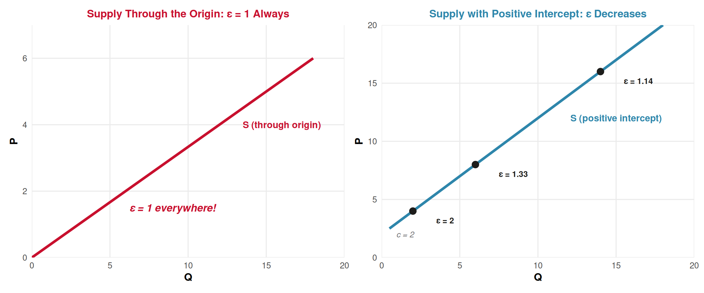
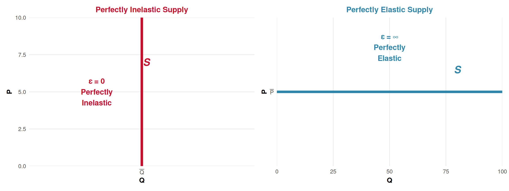
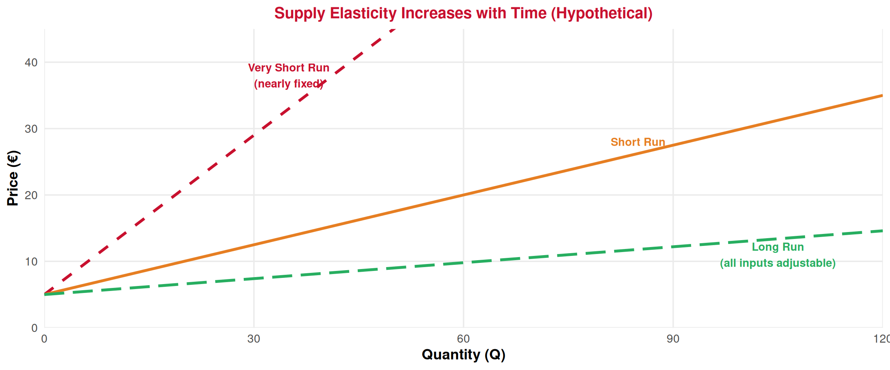

Producer Theory
Lecture 15: Elasticity — Demand Recap & Supply Elasticity
Recap: Lecture 14 ⏪
What we covered last time:
- Producer surplus: \(PS = TR - VC\) = area above supply, below price
- Market supply: horizontal sum of individual supply curves (kinks when firms enter)
- Linear supply: \(P = c + dQ\), with \(PS = \frac{1}{2} \times Q^* \times (P^* - c)\)
. . .
🎯 Today: How responsive are quantities to price changes?
Before we tackle supply elasticity, we need a quick recap of the demand elasticity concept — we ran out of time for it earlier in the course. The good news: the idea is the same on both sides!
Demand Elasticity: The Key Ideas
Price Elasticity of Demand 📉
Price Elasticity of Demand (\(\varepsilon_d\))
The percentage change in quantity demanded resulting from a 1% change in price:
\[\varepsilon_d = \frac{\%\Delta Q_d}{\%\Delta P} = \frac{\Delta Q / Q}{\Delta P / P}\]
Since demand slopes downward (P↑ → Q↓), \(\varepsilon_d\) is negative. We often use the absolute value \(|\varepsilon_d|\).
| \(|\varepsilon_d|\) | Classification | Meaning | Tourism example |
|---|---|---|---|
| \(> 1\) | Elastic | Q responds more than P | Leisure beach holidays |
| \(= 1\) | Unit elastic | Q responds exactly as P | — (theoretical midpoint) |
| \(< 1\) | Inelastic | Q responds less than P | Business travel |
| \(= 0\) | Perfectly inelastic | Q doesn’t respond at all | Emergency medical flights |
| \(= \infty\) | Perfectly elastic | Infinite response | Identical commodity, many sellers |
Calculating Demand Elasticity ✏️
Two methods (same as we’ll use for supply):
1️⃣ Point elasticity (at one point):
\[\varepsilon_d = \frac{\Delta Q}{\Delta P} \times \frac{P}{Q} = \frac{1}{\text{slope}} \times \frac{P}{Q}\]
Example: Demand is \(P = 50 - 2Q\).
At \(P = 30\), \(Q = 10\): slope = \(-2\)
\[\varepsilon_d = \frac{1}{-2} \times \frac{30}{10} = -1.5\]
\(|\varepsilon_d| = 1.5 > 1\) → elastic
2️⃣ Arc elasticity (midpoint method):
\[\varepsilon_d = \frac{Q_2 - Q_1}{(Q_1 + Q_2)/2} \div \frac{P_2 - P_1}{(P_1 + P_2)/2}\]
Example: A museum raises price from €10 to €12. Visitors fall from 1,000 to 800.
\[\varepsilon_d = \frac{-200}{900} \div \frac{2}{11} = -1.22\]
\(|\varepsilon_d| = 1.22 > 1\) → elastic
💡 Key insight for linear demand: elasticity varies along the curve — elastic at the top (high P, low Q), inelastic at the bottom (low P, high Q), unit elastic at the midpoint.
The Revenue Test & Determinants 💰
The Revenue Test:
How does total revenue (\(TR = P \times Q\)) respond to a price increase?
| Elasticity | P ↑ → TR? | Intuition |
|---|---|---|
| Elastic (\(|\varepsilon_d| > 1\)) | TR falls ⬇️ | Q drops more than P rises |
| Unit elastic (\(|\varepsilon_d| = 1\)) | TR unchanged | Effects cancel |
| Inelastic (\(|\varepsilon_d| < 1\)) | TR rises ⬆️ | Q drops less than P rises |
- 👉 Hotel prices up 10%, but bookings only drop 3%? Demand is inelastic → revenue rises!
Five determinants of demand elasticity:
- 🔄 Substitutes: more substitutes → more elastic
- 💰 Budget share: bigger expense → more elastic
- 💎 Necessity vs luxury: luxuries more elastic
- ⌛ Time horizon: long run → more elastic
- 🗺️ Market definition: narrower → more elastic
Tourism: Leisure travel is very elastic (\(|\varepsilon_d| \approx 2\)–3), business travel is inelastic (\(|\varepsilon_d| \approx 0.3\)). Airlines use this to price-discriminate!
Demand Elasticity: Quick Practice 🎯
Quick check — try these mentally before revealing the answers!
Q1: Algarve resort demand: \(P = 500 - 0.05Q\). At \(P = 100\), \(Q = 8{,}000\). Is demand elastic or inelastic?
\(\varepsilon_d = \frac{1}{-0.05} \times \frac{100}{8000} = -20 \times 0.0125 = -0.25\) → Inelastic (\(|\varepsilon_d| = 0.25 < 1\)). Raising prices would increase revenue!
Q2: If luxury cruise demand has \(|\varepsilon_d| = 2.5\) and operators raise prices by 8%, what happens to revenue?
Elastic demand → price and revenue move in opposite directions. Revenue falls. (\(\%\Delta Q \approx -20\%\), much larger than the 8% price rise.)
. . .
👉 Now let’s apply the exact same logic to the supply side!
Price Elasticity of Supply
Definition 📏
Price Elasticity of Supply (\(\varepsilon_s\))
The percentage change in quantity supplied resulting from a 1% change in price:
\[\varepsilon_s = \frac{\%\Delta Q_s}{\%\Delta P} = \frac{\Delta Q / Q}{\Delta P / P}\]
Key differences from demand elasticity:
| Demand elasticity (\(\varepsilon_d\)) | Supply elasticity (\(\varepsilon_s\)) | |
|---|---|---|
| Sign | Negative (P↑ → Q↓) | Positive (P↑ → Q↑) |
| We use absolute value? | Yes (\(|\varepsilon_d|\)) | No — it’s already positive |
| Interpretation | Responsiveness of buyers | Responsiveness of sellers |
Classification 📊
| Elasticity value | Classification | Meaning |
|---|---|---|
| \(\varepsilon_s > 1\) | Elastic | Quantity supplied responds more than proportionally to price |
| \(\varepsilon_s = 1\) | Unit elastic | Quantity supplied responds exactly proportionally |
| \(\varepsilon_s < 1\) | Inelastic | Quantity supplied responds less than proportionally |
| \(\varepsilon_s = 0\) | Perfectly inelastic | Quantity doesn’t respond at all (vertical supply) |
| \(\varepsilon_s = \infty\) | Perfectly elastic | Any quantity at one fixed price (horizontal supply) |
. . .
Tourism intuition:
- 🏨 Hotel rooms in Lisbon in the short run → inelastic (can’t build new rooms overnight)
- 🍴 Street food vendors in a tourist area → elastic (easy to set up a new stall)
- 🏛️ UNESCO heritage sites → perfectly inelastic (supply is fixed!)
Calculating Supply Elasticity
Point and Arc Methods ✏️
1️⃣ Point elasticity:
\[\varepsilon_s = \frac{1}{\text{slope}} \times \frac{P}{Q}\]
Example: Supply is \(P = 5 + 0.25Q\). At \(P = 30\), \(Q = 100\):
Slope = \(0.25\), so \(\frac{1}{\text{slope}} = 4\)
\[\varepsilon_s = 4 \times \frac{30}{100} = 1.2\]
Elastic — a 1% price increase leads to a 1.2% increase in quantity supplied.
2️⃣ Arc elasticity (midpoint):
\[\varepsilon_s = \frac{Q_2 - Q_1}{(Q_1 + Q_2)/2} \div \frac{P_2 - P_1}{(P_1 + P_2)/2}\]
Example: Tour operator increases tours from 40 to 50/month when price rises from €80 to €100.
\[\varepsilon_s = \frac{10}{45} \div \frac{20}{90} = 0.222 \div 0.222 = 1.0\]
Unit elastic — quantity and price change by the same percentage.
👉 Same methods as demand elasticity — just applied to the supply curve!
Elasticity Along a Linear Supply Curve 📏
Left: Supply through the origin → \(\varepsilon_s = 1\) at every point (P and Q always change proportionally).
Right: Supply with positive intercept (\(c > 0\)) → \(\varepsilon_s > 1\) near the intercept, falling as Q increases.
The Origin Rule & Quick Guide 💡
Why does supply through the origin always have \(\varepsilon_s = 1\)?
If \(P = dQ\): \(\quad \varepsilon_s = \frac{1}{d} \times \frac{P}{Q} = \frac{1}{d} \times \frac{dQ}{Q} = 1\)
The \(P/Q\) ratio always equals \(d\), which cancels perfectly with \(1/d\).
. . .
Quick Elasticity Guide for Linear Supply \(P = c + dQ\)
| Intercept | Elasticity | Shortcut formula |
|---|---|---|
| \(c = 0\) (through origin) | \(\varepsilon_s = 1\) everywhere | — |
| \(c > 0\) (positive intercept) | \(\varepsilon_s > 1\), falling toward 1 | \(\varepsilon_s = \frac{P}{P - c}\) |
| \(c < 0\) (hits Q-axis) | \(\varepsilon_s < 1\) everywhere | \(\varepsilon_s = \frac{P}{P - c}\) (where \(c < 0\)) |
👉 Contrast with demand: demand elasticity varies from \(\infty\) to \(0\) along a linear curve. Supply elasticity is more “stable.”
Extreme Cases 📐

Perfectly inelastic (\(\varepsilon_s = 0\)): Quantity fixed regardless of price.
Tourism: Hotel rooms in a fully built-up area, UNESCO sites, beach space.
Perfectly elastic (\(\varepsilon_s = \infty\)): Any quantity at one price — constant MC.
Tourism: Digital products (e-tickets, online guides) — near-zero MC per copy.
Determinants of Supply Elasticity
What Makes Supply More or Less Elastic? 🤔
The textbook identifies four key determinants (plus time):
1️⃣ Flexibility of production factors
Can inputs be used for other things? If yes → elastic.
- ✅ Elastic: Unskilled labor (waiters can switch from retail to tourism)
- ❌ Inelastic: Specialized skills (brain surgeons, master sommeliers)
2️⃣ Mobility of production factors
Can inputs move between locations? If yes → elastic.
- ✅ Elastic: Touring musicians, portable equipment
- ❌ Inelastic: Beachfront land, historical buildings
3️⃣ Ability to produce substitute inputs
Can inputs be replicated over time? If yes → elastic.
- ✅ Elastic: Train more tour guides, build more hotel rooms
- ❌ Inelastic: Rare natural resources (diamond mines, volcanic hot springs)
4️⃣ Time horizon ⌛
- Short run: At least one input is fixed → more inelastic
- Long run: All inputs adjustable → more elastic
- Very short run (market period): supply is nearly vertical
Time and Supply Elasticity ⌛

The longer the time horizon, the more firms can adjust all inputs → supply becomes flatter (more elastic).
Tourism Applications
Elasticity in Tourism: Both Sides ✈️
Inelastic supply (\(\varepsilon_s\) small):
- 🏨 Hotel rooms in central Lisbon: limited space, takes years to build
- 🏛️ Museum capacity: Jerónimos can’t add rooms
- 🏖️ Beach access in Algarve: fixed coastline
Implication: When demand rises (peak season), price rises sharply because supply can’t respond much.
Elastic supply (\(\varepsilon_s\) large):
- 🚌 Tour buses: can add more buses relatively quickly
- 🍴 Food trucks at festivals: quick to set up
- 📱 Online booking services: near-zero cost to scale
Implication: When demand rises, quantity adjusts more than price — price stays relatively stable.
. . .
- 👉 Both elasticities together determine who bears the burden of taxes and price shocks! The side with less elastic response absorbs more of the burden.
The Full Parallel: Demand vs Supply Elasticity 🤝
| Concept | Demand Elasticity | Supply Elasticity |
|---|---|---|
| Formula | \(\varepsilon_d = \frac{\Delta Q/Q}{\Delta P/P}\) | \(\varepsilon_s = \frac{\Delta Q/Q}{\Delta P/P}\) |
| Sign | Negative (use \(|\varepsilon_d|\)) | Positive |
| Elastic | \(|\varepsilon_d| > 1\) | \(\varepsilon_s > 1\) |
| Revenue test | Elastic: P↑ → TR↓ | No direct revenue test |
| Along linear curve | Varies: ∞ → 1 → 0 | More stable; through origin = 1 |
| Key determinants | Substitutes, budget share, necessity, time, market definition | Input flexibility, mobility, replicability, time |
| Perfectly inelastic | Vertical demand | Vertical supply |
| Perfectly elastic | Horizontal demand | Horizontal supply |
- 👉 Both sides use the same formula and same classification. The determinants differ because they reflect different underlying decisions (buying vs producing).
Summary 📝
Today’s Key Takeaways:
Demand elasticity recap:
- \(\varepsilon_d = \frac{\%\Delta Q}{\%\Delta P}\) — negative, use \(|\varepsilon_d|\). Elastic > 1, inelastic < 1
- Revenue test: elastic → P↑ means TR↓; inelastic → P↑ means TR↑
- Determinants: substitutes, budget share, necessity/luxury, time, market definition
Supply elasticity (new):
- \(\varepsilon_s = \frac{\%\Delta Q_s}{\%\Delta P}\) — always positive. Same formula, same classification
- Linear supply through origin: \(\varepsilon_s = 1\) everywhere. Positive intercept: \(\varepsilon_s > 1\)
- Determinants: flexibility, mobility, and replicability of inputs, time horizon
- Time: very short run (inelastic) → short run → long run (elastic)
- Both elasticities together determine price volatility and tax burden sharing
Next (Lecture 16, April 16): Short Run and Long Run Market Equilibrium ⚖️
Exercises
Practice Time! ✏️
Demand and supply elasticity calculation.
Exercise 1: Multiple Choice
Question: The supply of hotel rooms in Porto’s city center has \(\varepsilon_s = 0.3\). If room prices increase by 20%, what happens to the quantity of rooms supplied?
A. Quantity increases by 60%
B. Quantity increases by 6%
C. Quantity increases by 0.6%
D. Quantity increases by 20%
Answer: B
\(\%\Delta Q_s = \varepsilon_s \times \%\Delta P = 0.3 \times 20\% = 6\%\)
Supply is inelastic (\(\varepsilon_s = 0.3 < 1\)): even a large price increase (20%) produces only a small quantity response (6%). You can’t build new hotel rooms quickly!
Exercise 2: Multiple Choice
Question: Demand for TAP flights from Lisbon to London has \(|\varepsilon_d| = 1.8\). If TAP raises fares by 10%, what happens to total revenue from this route?
A. Revenue increases by 18%
B. Revenue increases because higher price means more money per ticket
C. Revenue falls because passenger numbers drop by more than 10%
D. Revenue stays the same
Answer: C
Demand is elastic (\(|\varepsilon_d| = 1.8 > 1\)): a 10% fare increase causes approximately \(1.8 \times 10\% = 18\%\) fewer passengers. Since quantity drops proportionally more than price rises, \(TR = P \times Q\) falls. This is the revenue test for elastic demand.
Exercise 3: Open Question ✍️
The market for tuk-tuk tours in Lisbon has the following estimated curves:
- Demand: \(P = 36 - 0.2Q\) (€ per tour)
- Supply: \(P = 6 + 0.1Q\) (€ per tour)
a) Find the equilibrium price and quantity.
b) Calculate the price elasticity of demand at the equilibrium point. Is demand elastic or inelastic?
c) Calculate the price elasticity of supply at the equilibrium point. Is supply elastic or inelastic?
d) At the equilibrium, if the city council imposes a small price increase (say €1), would you expect total revenue to rise or fall? Use the revenue test from part (b).
e) The supply has a positive intercept (\(c = 6\)). Using the shortcut formula \(\varepsilon_s = \frac{P}{P - c}\), verify your answer from part (c). At what price would supply elasticity equal exactly 2?
f) The city council considers a €3 per-tour tax on operators. This shifts supply to \(P = 9 + 0.1Q\). Find the new equilibrium. Who bears more of the tax burden — tourists or operators? Relate your answer to the elasticities you calculated.
Exercise 3: Solution — Parts a, b & c
a) Equilibrium: \(36 - 0.2Q = 6 + 0.1Q\) → \(30 = 0.3Q\) → \(Q^* = 100\), \(P^* = 36 - 0.2(100) = €16\)
b) Demand elasticity at \((Q^* = 100, P^* = 16)\):
Demand slope = \(-0.2\), so \(\frac{1}{\text{slope}} = \frac{1}{-0.2} = -5\)
\[\varepsilon_d = -5 \times \frac{16}{100} = -0.8\]
\(|\varepsilon_d| = 0.8 < 1\) → Demand is inelastic at the equilibrium.
c) Supply elasticity at \((Q^* = 100, P^* = 16)\):
Supply slope = \(0.1\), so \(\frac{1}{\text{slope}} = 10\)
\[\varepsilon_s = 10 \times \frac{16}{100} = 1.6\]
\(\varepsilon_s = 1.6 > 1\) → Supply is elastic at the equilibrium.
Exercise 3: Solution — Parts d & e
d) Since demand is inelastic (\(|\varepsilon_d| = 0.8 < 1\)), the revenue test says: a price increase → total revenue rises. Quantity falls, but by a smaller percentage than price rises. The €1 increase would increase TR.
e) Shortcut: \(\varepsilon_s = \frac{P}{P - c} = \frac{16}{16 - 6} = \frac{16}{10} = 1.6\) ✅ Matches part (c)!
For \(\varepsilon_s = 2\): \(\frac{P}{P - 6} = 2\) → \(P = 2P - 12\) → \(P = €12\)
At \(P = 12\): \(Q = \frac{12 - 6}{0.1} = 60\) tours. So supply is more elastic at lower prices (closer to the intercept).
Exercise 3: Solution — Part f
f) New supply with €3 tax: \(P = 9 + 0.1Q\)
New equilibrium: \(36 - 0.2Q = 9 + 0.1Q\) → \(27 = 0.3Q\) → \(Q^* = 90\), \(P^* = 36 - 0.2(90) = €18\)
| Before tax | After tax | Change | |
|---|---|---|---|
| Price paid by tourists | €16 | €18 | +€2 |
| Price received by operators (net of tax) | €16 | €18 − €3 = €15 | −€1 |
| Quantity | 100 | 90 | −10 |
Of the €3 tax: tourists pay €2 more, operators receive €1 less.
👉 Tourists bear more (€2 out of €3) because demand is more inelastic (\(|\varepsilon_d| = 0.8\)) than supply is (\(\varepsilon_s = 1.6\)). The side with less elastic response absorbs more of the tax.
💡 This is a general rule: tax burden falls more heavily on the side of the market that is less responsive to price changes.
Next Lecture
April 16, 2026: Short Run and Long Run Market Equilibrium ⚖️
We finally put demand and supply together to find prices and quantities!
. . .
👉 This is the payoff of Lectures 5–15: consumer theory meets producer theory!
Thank You!
Questions? 🙋
📧 paulo.fagandini@ext.universidadeeuropeia.pt
Next class: Thursday, April 16, 2026
This lecture serves double duty: it provides the demand elasticity content that was skipped (L9) in condensed form, then teaches supply elasticity as its mirror. The demand recap is kept to 3-4 slides covering definition, calculation, revenue test, and determinants — just enough for students to use the concept. The supply elasticity section follows the same structure. The exercise integrates both sides with a tax incidence analysis that requires comparing demand and supply elasticities, which is the conceptual payoff of learning both.